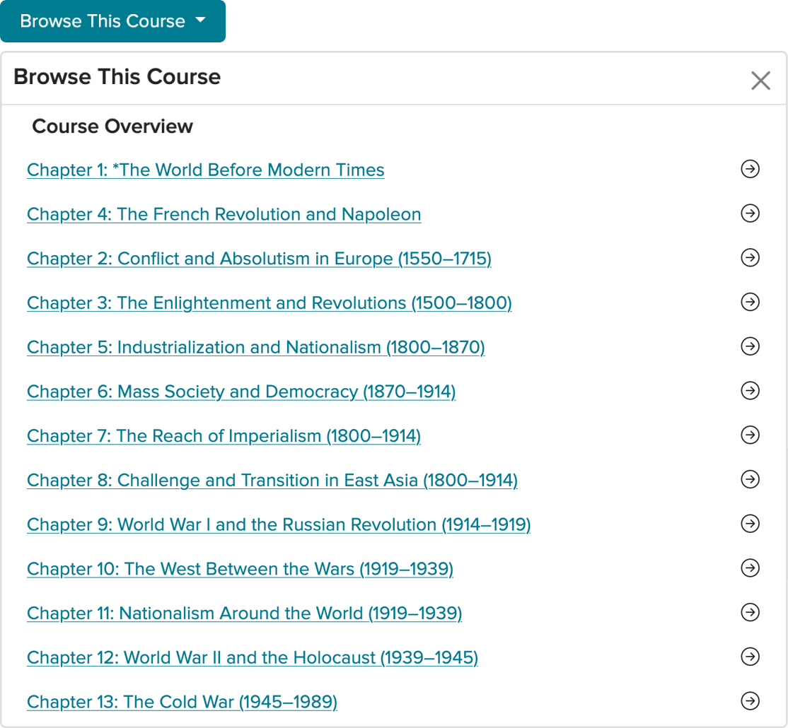
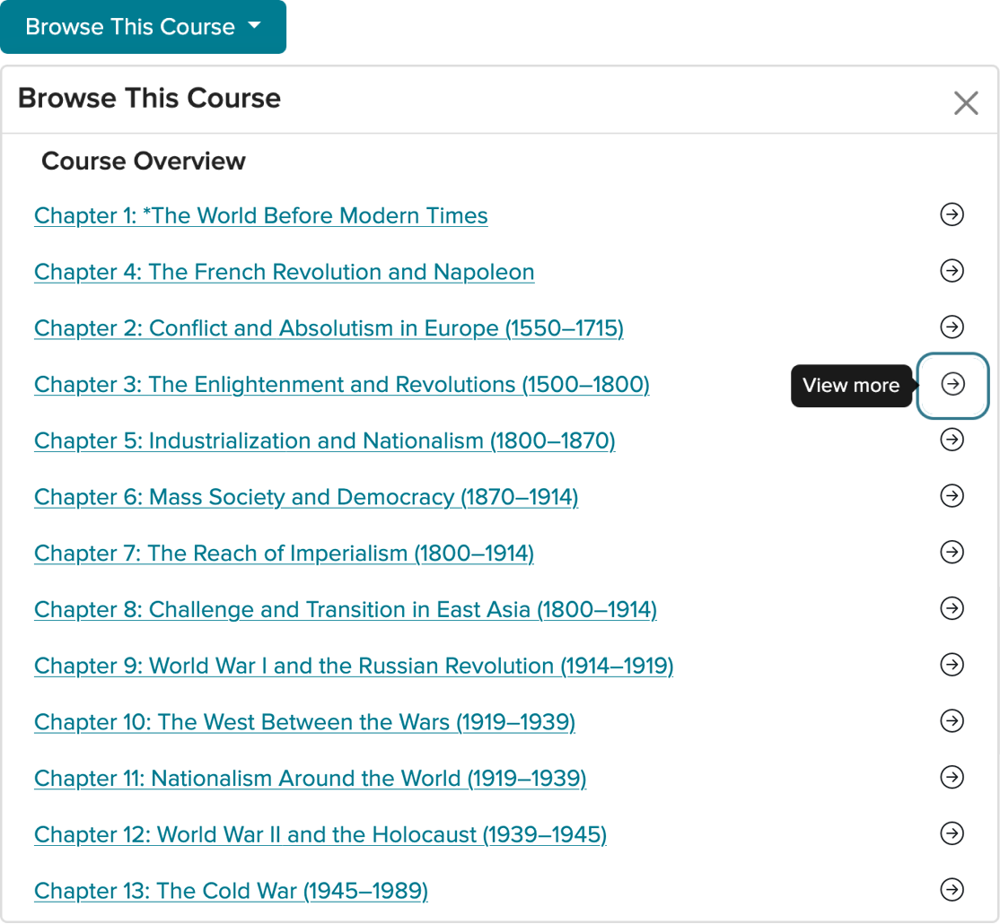
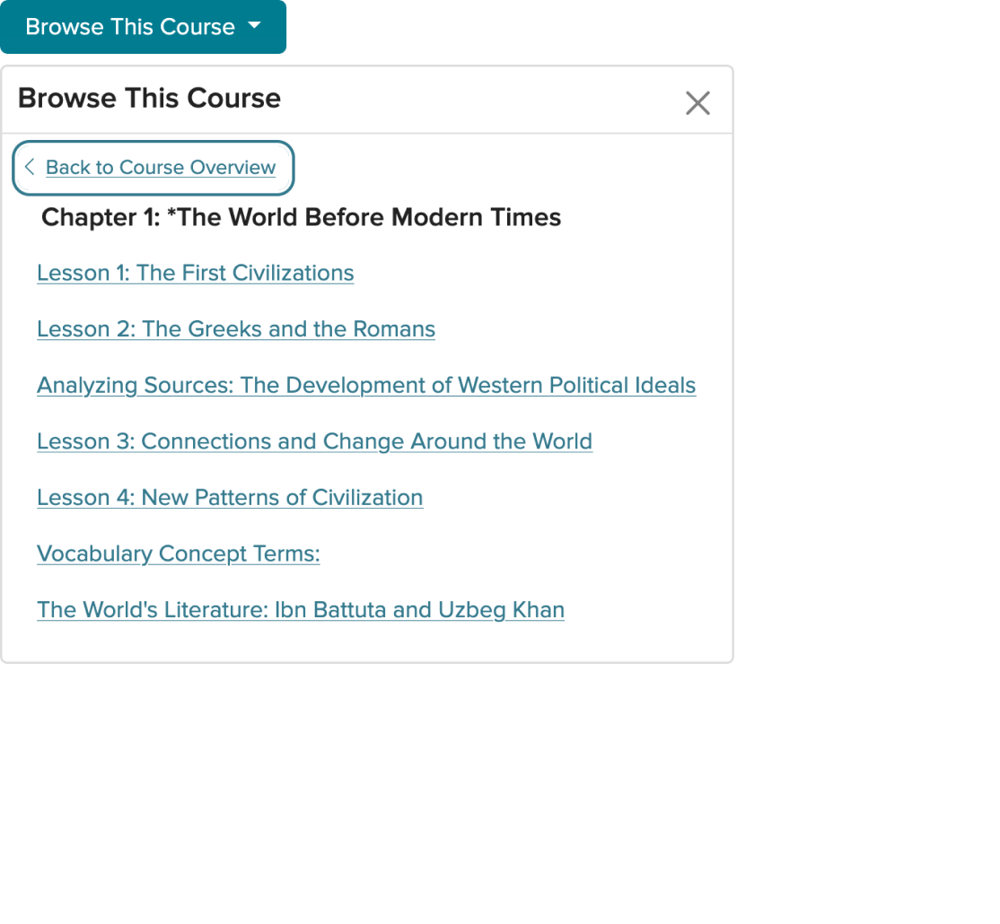
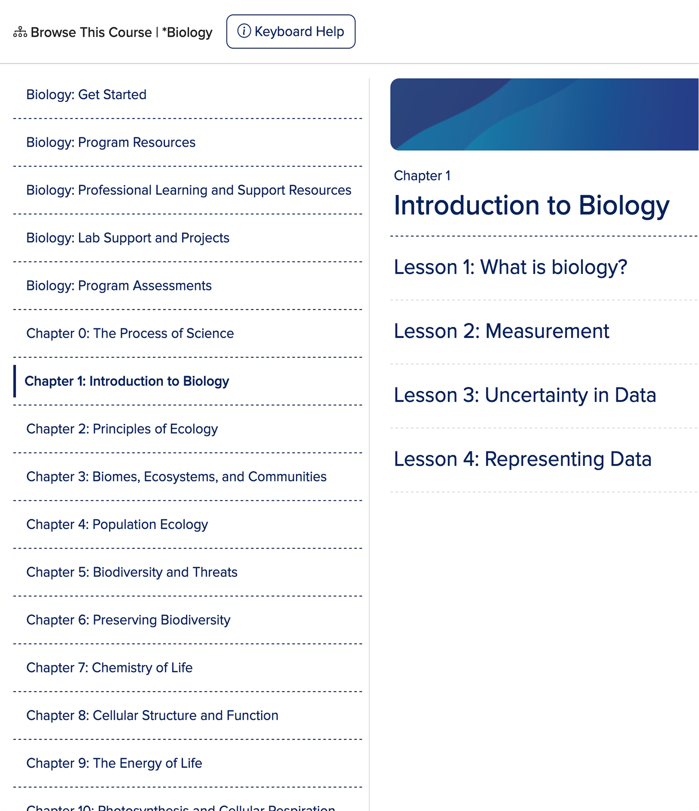
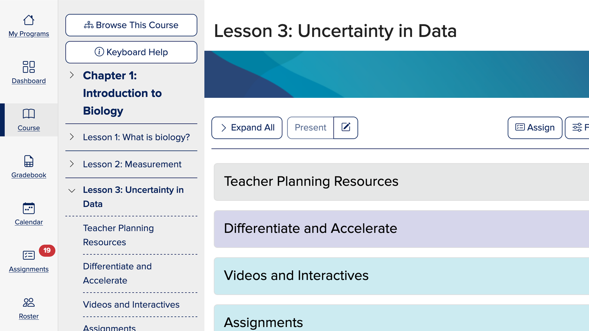
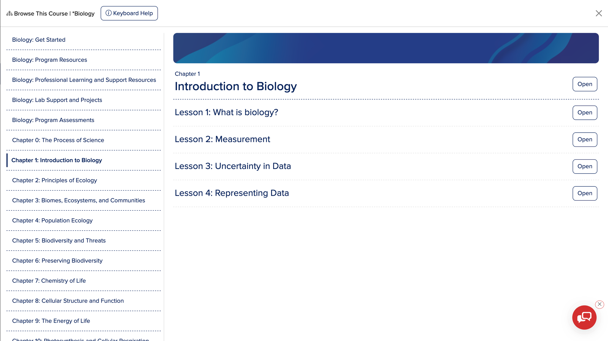

Applicants weren't finishing Terafina's account-opening flow.
View project
McGraw Hill Education · Content discovery
McGraw Hill's Open Learning Platform powered K-12 instructional content for teachers and students, but the way that content was structured made it difficult to navigate in practice. Teachers had to drill through multiple layers to find a single resource, and that friction disrupted the classroom moment when speed mattered most.

The platform's content model was deeply nested, with multiple layers that could each hold content or simply act as containers. In practice, teachers often had to click through several levels before reaching anything usable.
That structure slowed people down, broke their flow, and made content discovery feel heavier than it needed to be. For administrators reviewing the platform at a state level, it also made it harder to understand what was actually inside the curriculum.
The problem wasn't the same for every user. Teachers often knew exactly what they were trying to find and needed to get there fast. Reviewers were looking for the opposite: a high-level view that made the breadth and structure of the curriculum easier to understand.
The work had to support both experiences at once, without making either one feel compromised.
To reach the course structure, teachers first had to open a separate Browse This Course view, then decide whether to enter a container or expand it, then continue drilling down until something actionable appeared.
That step-by-step model created unnecessary friction, especially during live instruction when teachers needed quick access and very little interruption. The deeper the structure went, the more work it took just to understand where useful content actually lived.
The hierarchy was complex, and it was also hidden. Users had to progressively unpack the platform before they could decide where to go next, which made navigation feel slow and opaque.
That made even well-organized content feel harder to use than it actually was.

Teachers first had to click Browse This Course just to expose the content structure.

Each container offered a link into it or an arrow to peek inside, one level at a time.

Only inside the parent folder could a teacher finally see what it held.
The redesign focused on making navigation more transparent, more persistent, and easier to scan at a glance. Instead of forcing users in and out of containers, the experience was restructured to keep the course hierarchy in view and make movement through it feel more direct.
A persistent left-hand navigation panel gave teachers immediate access to course content without losing their place, while a full-page table of contents created a higher-level view for broader scanning and faster orientation.

Lesson subject matter stays in view without jumping in and out of containers.

State-level administrators can see all the educational content in context on one screen.
The content still needed to support a wide range of educational structures, products, and roles. The work left that system intact and made it easier for people to see where they were and what was available.
That shift made the platform feel more responsive to real classroom use and more legible to people evaluating it from a distance.
With the updated navigation in place, teachers no longer had to drill through intermediate containers to reach instructional materials. Content hierarchy became actionable at a glance, and the table of contents stayed reachable from every content page.
The full-screen table of contents also gave administrators and reviewers a clearer view of the curriculum in context, helping them understand the structure and scope of the product more quickly. That mattered in higher-stakes evaluation settings, where discoverability and clarity directly influenced adoption decisions.
The persistent panel and full-screen table of contents replaced several click-heavy interactions with snappier, context-aware access.
These changes supported more confident, responsive classroom instruction, helping educators keep their flow even when pivoting to new content mid-lesson.
Content hierarchy and materials became actionable at a glance, without drilling through intermediate containers.
The persistent panel and full-screen table of contents replaced several click-heavy interactions with faster, context-aware access.
These outcomes supported more confident, responsive classroom instruction, helping educators keep their flow when pivoting to new content mid-lesson.
Regardless of a teacher's location, the table of contents stayed reachable from the Browse This Course action on every content page.


Making the content easier to discover didn't change what the platform offered, it changed how usable that value felt in practice. That's the difference that made the experience hold up for teachers, reviewers, and the business behind it.